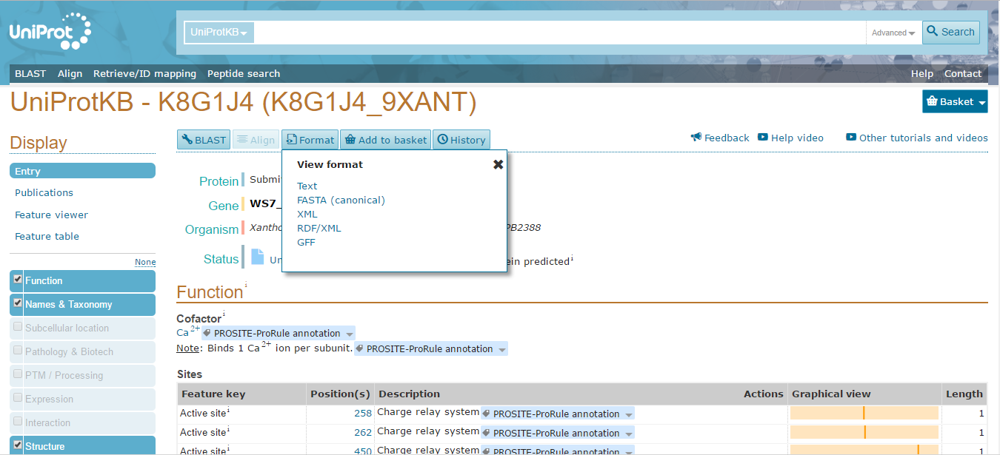
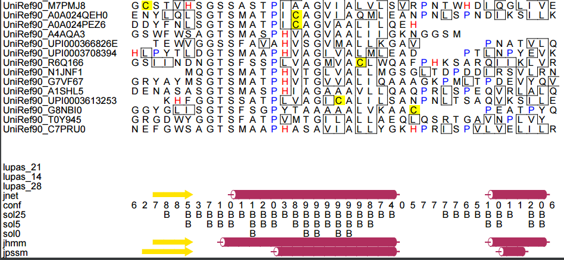

Vaishnavi: BINF_630 - Assignment
I. Predict secondary and three-dimensional structure for the selected sequence using an advanced secondary structure prediction algorithm and a homology modeling algorithm, respectively. (Protein - K8G1J4).
To predict the secondary and three-dimensional structure for the protein K8G1J4 using an advanced secondary structure prediction algorithm and a homology modeling algorithm protein sequence in FASTA format is required which is obtained through UniProt(http://www.uniprot.org/). The protein ID is given and the sequence for the protein in FASTA format is retrieved (http://www.uniprot.org/uniprot/K8G1J4).
The FASTA sequence is available at:
http://www.uniprot.org/uniprot/K8G1J4.fasta>tr|K8G1J4|K8G1J4_9XANT Peptidase OS=Xanthomonas axonopodis pv. malvacearum str. GSPB2388 GN=WS7_05788 PE=4 SV=1 MHTILADSERRPAPSTVEAGQPPQDERLRVLLAVRMPALNAAADALLQLQPNTLPVAFTR AEFSERFAAGAGDLQAVADFAASYGLRIEHAHADSGSVILEGTVQQCEAAFQVSLRDYID GAMRYRGRTGPVSIPQALGGIVTAVLGLDARPQAQTLPSAPEASASLPPAIQPTAPADSR DGPIMQYTPPQLAQLYGFPEHDGHGQCIGIIVLGGGYARDQMTAYFAQLRVPMPTLVDVL LPGATNAVSRGNADADVEAQMDIQIAGAIAPGAKLVMYFAPNTDNGFLEAINAAIHDAEH SPGIIAISWGFTESQWTPQSRQAYDCAFRAAALMGITVCIAAGDDGASDGQPGLNVCFPA SSPFVLACGGTRLQVTADSANEQAWASGGGGESRFFARPAWQNNLRLTDAQHQSRHLRMR GVPDVAANADAQTGYYLSINGQPAVMGGTSAAAPLWAALLARIYGANRMQPHFMLPRLYG HPEAFRDIVAGDNAGFRAATGWDANTGLGVPDGARLAEALRHN
To predict the secondary structure Jpred 4: a protein secondary structure predictor (http://www.compbio.dundee.ac.uk/jpred/) is used by submitting the protein sequence in FASTA format and clicking on “Make Prediction” button. The results of the predictor are shown below where red color bonds represent the helices and the green represent beta sheets (http://www.compbio.dundee.ac.uk/jpred4/results/jp_NC1Pll4/jp_NC1Pll4.results.html).
The “View full results in HTML” link in the results gives the user a better view of the results (http://www.compbio.dundee.ac.uk/jpred4/results/jp_NC1Pll4/jp_NC1Pll4.html). The numbers in green at the bottom of the results in html represent the prediction accuracy. The numbers 7, 8 and 9 are more accurate and reliable than the others which means that higher the number more accurate is the prediction.
The three-dimensional structure using advance homology modeling algorithms can be obtained using the Swiss-Model (https://swissmodel.expasy.org/interactive/) which provides different templates and models for the protein sequence that must be predicted. The FASTA format sequence retrieved from UniProt is uploaded and the “Search for Templates” button is clicked. The prediction of the swiss model resulted in 56 Templates and 1 Model for the protein sequence (https://swissmodel.expasy.org/interactive/rJFKVG/templates/). The protein can be chosen based on the “Coverage” and “Identity” from the predictions. The models with high coverage give more coils in the 3D structure and less sequence identity, so the protein “1t1e.1.A Kumamolisin” has high coverage when compared to the other results from the predictions (https://swissmodel.expasy.org/interactive/rJFKVG/models/). The PDB format of the protein 1T1E is obtained from the Swiss-Model which is also the PDB ID of the protein (https://swissmodel.expasy.org/templates/1t1e.1.pdb).
II. Analyze the quality of your model using one of the structure validation or verification tools
To analyze the quality of the protein model obtained using structure validation, there are many tools that can be used. PROCHECK (http://services.mbi.ucla.edu/PROCHECK/) is one of the tools that can be used to validate the predicted protein structure. The PDB file obtained from the Swiss-Model is uploaded and the “Run PROCHECK” button is clicked. After the process is completed, PROCHECK gives various results for the protein structure like Phi-psi and chi1-chi2 distributions, Bond lengths, Bond angles, Planar groups, Stereochemical quality plots and residue-by-residue listing. The summary (http://services.mbi.ucla.edu/PROCHECK/Jobs/8614818/model_01.sum) and the Ramachandran plot (http://services.mbi.ucla.edu/PROCHECK/) for the protein structure is shown below.
III. Identify structural classification of your model.
The structural classification for the protein model obtained can be done by using CATH or SCOPe. A hierarchical classification of protein domains (sub-sequences of proteins that may fold, evolve and function independently of the rest of the protein) based on their folding patterns is provided by the CATH database (http://www.cathdb.info/). It is a classification of protein domains based not just on sequence information, but on structural and functional properties as well, which offers proteins even with very minute sequence similarity which often are both structurally and functionally related. The PDB format of the protein obtained from the Swiss-Model is uploaded to do the classification and resulted in 34 matching domains and 10 matching functional families for the protein, of which based on high similarity and coverage (177-520) “1t1eA02” was chosen (http://www.cathdb.info/version/v4_1_0/domain/1t1eA02) and the classification of the protein structure (http://www.cathdb.info/version/v4_1_0/superfamily/3.40.50.200) is shown below.
IV. [FOR BINF630 AND BIOL580 STUDENTS ONLY: Compare predicted secondary structures with the secondary structures in 3D model.]
To compare the predicted secondary structures with the secondary structures in 3D model, various tools can be used. Protein structures were aligned using the iPBA, the PDB files from Swiss-Model and the PDB file fromt eh Jpred prediction are given uploaded and the proteins were aligned (http://www.dsimb.inserm.fr/dsimb_tools/ipba/TMP/ipba.20170428061427_69758/results.html) and the summary of the alignment can be viewed here http://www.dsimb.inserm.fr/dsimb_tools/ipba/TMP/ipba.20170428061427_69758/summary.
Visualisation of structural superposition
Comparison using PyMOL (https://www.pymol.org/):
Predicted Protein Structure (Jpred):
|
|

|
3D Model Protein Structure (Swiss - Model):
|
|
|
Comparison of the Predicted Protein Structure and the 3D Model Protein Structure:
|
|
|
According to PyMOL the comparison of the secondary structures of the Jpred predicted protein and the Swiss-Model protein slightly differ, which states that the protein structure predicted both the Jpred and the Swiss-Model are of the same protein. The complete details of the predicted protein can be obtained from DSSP classification (http://mrs.cmbi.ru.nl/entry?db=pdb&nr=22344&q=1t1e).